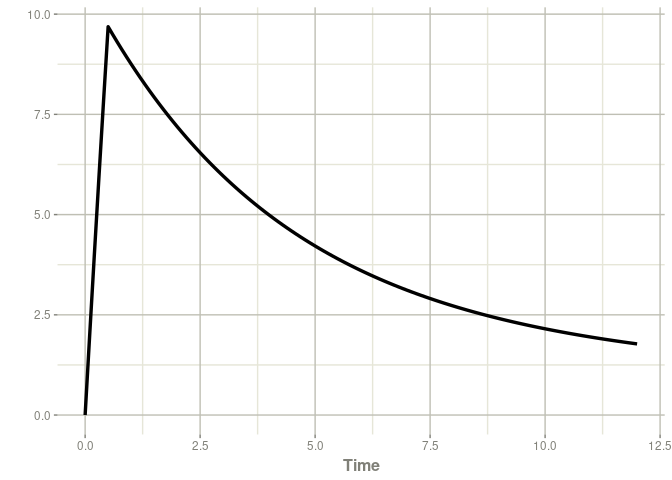

Overview
Personalize drug regimens using individual pharmacokinetic (PK) and pharmacokinetic-pharmacodynamic (PK-PD) profiles. By combining therapeutic drug monitoring (TDM) data with a population model, posologyr offers accurate posterior estimates and helps compute optimal individualized dosing regimens.
Key dosage optimization functions in posologyr include:
-
poso_dose_conc()estimates the optimal dose to achieve a target concentration at any given time -
poso_dose_auc()estimates the dose needed to reach a target area under the concentration-time curve (AUC) -
poso_time_cmin()estimates the time required to reach a target trough concentration (Cmin) -
poso_inter_cmin()estimates the optimal dosing interval to consistently achieve a target Cmin
Individual PK profiles can be estimated with or without TDM data:
-
poso_estim_map()computes Maximum A Posteriori Bayesian Estimates (MAP-BE) of individual PK parameters using TDM results -
poso_simu_pop()samples from the the prior distributions of PK parameters
posologyr leverages the simulation capabilities of the rxode2 package.
Installation
You can install the released version of posologyr from CRAN with:
install.packages("posologyr")You can install the development version of posologyr from GitHub with:
# install.packages("remotes")
remotes::install_github("levenc/posologyr")Bayesian dosing example
To determine the optimal dose of gentamicin for a patient with posologyr, you will need:
- A prior PK model, written in
rxode2mini-language
In this example, a gentamicin PK from the literature doi:10.1016/j.ijantimicag.2003.07.010
mod_gentamicin_Xuan2003 <- function() {
ini({
THETA_Cl = 0.047
THETA_V = 0.28
THETA_k12 = 0.092
THETA_k21 = 0.071
ETA_Cl ~ 0.084
ETA_V ~ 0.003
ETA_k12 ~ 0.398
ETA_k21 ~ 0.342
add_sd <- 0.230
prop_sd <- 0.237
})
model({
TVl = THETA_Cl*ClCr
TVV = THETA_V*WT
TVk12 = THETA_k12
TVk21 = THETA_k21
Cl = TVl*exp(ETA_Cl)
V = TVV*exp(ETA_V)
k12 = TVk12*exp(ETA_k12)
k21 = TVk21 *exp(ETA_k21)
ke = Cl/V
Cp = centr/V
d/dt(centr) = - ke*centr - k12*centr + k21*periph
d/dt(periph) = + k12*centr - k21*periph
Cp ~ add(add_sd) + prop(prop_sd) + combined1()
})
}- A table of the patient’s TDM data, in a format similar to the data for NONMEM
patient_data <- data.frame(ID=1,
TIME=c(0.0,1.0,11.0),
DV=c(NA,9,2),
AMT=c(180,0,0),
DUR=c(0.5,NA,NA),
EVID=c(1,0,0),
ClCr=38,
WT=63)
patient_data
#> ID TIME DV AMT DUR EVID ClCr WT
#> 1 1 0 NA 180 0.5 1 38 63
#> 2 1 1 9 0 NA 0 38 63
#> 3 1 11 2 0 NA 0 38 63Individual PK profile
With these two elements, you can estimate and plot and the individual concentrations over time.
patient_map <- poso_estim_map(patient_data,mod_gentamicin_Xuan2003)
plot(patient_map$model,Cc)
Dose optimization
We will optimize the gentamicin dosage for this patient to meet two criteria:
- A peak concentration of 12 mg/L, 30 minutes after a 30-minute infusion.
- A trough concentration of less than 0.5 mg/L.
The time required to reach a residual concentration of 0.5 mg/L can be estimated as follows:
poso_time_cmin(patient_data,mod_gentamicin_Xuan2003,tdm=TRUE,
target_cmin = 0.5)
#> $time
#> [1] 44.9
#>
#> $type_of_estimate
#> [1] "point estimate"
#>
#> $cmin_estimate
#> [1] 0.4991313
#>
#> $indiv_param
#> THETA_Cl THETA_V THETA_k12 THETA_k21 add_sd prop_sd ETA_Cl ETA_V
#> 3 0.047 0.28 0.092 0.071 0.23 0.237 0.03701064 0.001447308
#> ETA_k12 ETA_k21 ClCr WT
#> 3 0.08904703 -0.04838898 38 63The dose required to achieve our target concentration can then be determined for an infusion at H48.
poso_dose_conc(patient_data,mod_gentamicin_Xuan2003,tdm=TRUE,
target_conc = 12,duration=0.5,time_dose = 48,time_c = 49)
#> $dose
#> [1] 237.5902
#>
#> $type_of_estimate
#> [1] "point estimate"
#>
#> $conc_estimate
#> [1] 12
#>
#> $indiv_param
#> THETA_Cl THETA_V THETA_k12 THETA_k21 add_sd prop_sd ETA_Cl ETA_V
#> 3 0.047 0.28 0.092 0.071 0.23 0.237 0.03701052 0.001447305
#> ETA_k12 ETA_k21 ClCr WT
#> 3 0.08904752 -0.04838936 38 63In conclusion a dose of 240 mg 48 h after the first injection would be appropriate to meet our 2 criteria.
More examples can be found at: https://levenc.github.io/posologyr/
Performance of the MAP-BE algorithm in posologyr
posologyr showed comparable performance to NONMEM MAP estimation with option MAXEVAL=0:
- Pharmaceutics 2022, 14(2), 442; doi:10.3390/pharmaceutics14020442
- Supporting data: https://github.com/levenc/posologyr-pharmaceutics